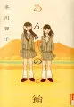

冬川智子（ふゆかわ ともこ）
あんずのど飴

01まんがに付いていた「冬川智子ニュース」ってのを見ると「あんずのど飴」は以下の人にってことみたい
- 田舎の何もない風景の中で過ごした3年間
- 大好きな友達がいた
- 友達との関係が少しずつ変わっていった
- その友達とは今連絡をとっていない
このまんがはスマホアプリで見て最後はどうなるのかなと思い探して買ったまんが。冬川智子ニュースにあるように高校生の要とはるかのまんが。淡々と話が進むけど、2人の関係性がくっつき離れていく。高校生のこんな感じはなんとなく分かるし、最後のあんずのど飴が一瞬で過去に戻って切ない。1巻だけのまんがだけど何気に中身は濃い。
自分はじじいなんだけど、人生を振り返ると高校生の頃でずっとループしていたい。もっと言うと小学5、6年が一番きらきらしていたように思うし、子供と大人の境界だった感じ。その時代、その時の人達でずっといたかった。
何かそんな事を考えさせられたいいまんが。
データベース
| タイトル | ISBN | 絵 | 作 | 発行 | URL | 紙 | 電子 | その他1 | その他2 |
|---|---|---|---|---|---|---|---|---|---|
| あんずのど飴 | 9784091886149 | 冬川智子 | 小学館 | url | Y | 4173 |